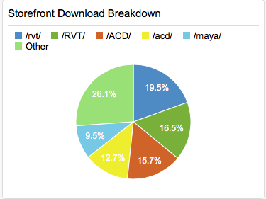
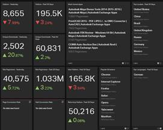

Revit API Task Solving, Success, AppStore etc.
Let's start the week with these topics:
- General approach to a Revit API programming task
- Revit API and AppStore success
- Architecture and AEC market disruption
- Autodesk 2016 AEC products
- Africa is really big, man
We start off with something Revit API related, then move on to the Revit API and AppStore in general, architecture and AEC in general, and an interesting aspect of the world having almost nothing whatsoever to do with Revit or AEC at all.
General Approach to a Revit API Programming Task
Question: I have the following Revit API programming task:
I would like to place an instance of a group on a specific level through the API.
I see that it is possible to place an instance of a group at a specific XYZ coordinate using
ItemFactoryBase.PlaceGroup(XYZ, GroupType);
It's also possible to place a family instance on a specific level using:
Document.NewFamilyInstance(XYZ,FamilySymbol,Level, StructuralType);
But there does not seem to be any corresponding method that I can see that can set the level of an instance of a group.
Answer: I cannot say anything specifically about the issue you raise off-hand.
However, it does prompt me to reiterate the standard approach to this kind of task, which is always the same:
- Ensure that you can achieve the desired result manually through the user interface. If that is not possible, the Revit API will probably not be able to achieve it either.
- Create a minimal sample model at a point just before the targeted step and just after it has been achieved.
- Determine the exact differences between the two states of the model. What elements have been added, removed, modified, which properties are affected? This is where the element lister and RevitLookup come in handy, and other, more intimate database exploration techniques.
Now the question becomes how to achieve the same changes programmatically.
In this specific case, it may or may not be possible to modify the level associated with the group after it has been placed.
Please explore the issue a little along these and let us know the outcome so we can determine how to proceed from there.
If any problems remain to be resolved or a wish for new functionality needs to be raised, we will require a reproducible case to understand, test and ensure the resolution.
Revit API and AppStore Success
A colleague from the BIM sales team asked for a pair of slides on the Revit API for big presentation to an important customer.
The main idea is to prove that 'beyond doubt, Revit API is great and powerful' :-)
One effective way to underline that message might simply be a snapshot of the Revit AppStore.
Possibly, no nitty-gritty technical details will prove the point as well as the real existing market situation.
The Revit AppStore does indeed furnish some impressive numbers, e.g. ca. 400.000 downloads, 435 Revit apps, almost a million downloads overall.
Visually, you can clearly see that Revit apps are the most downloaded, from within Revit itself plus /RVT, e.g., via browser:

Another new record that has just been registered is the conversion of visits to downloads, which exceeded the 30% level over the past 30 days:

Architecture and AEC Market Disruption
Just a quick pointer to the interesting article by Roopinder Tara on Phil Bernstein, Autodesk’s chief visionary in all things architecture, saying that Architects Better Believe in Disruptions -- They Are In One.
Autodesk 2016 AEC Products
While we're at it, another quick pointer at Lachmi Khemlani yearly aecbytes Autodesk AEC portfolio product overview, Autodesk AEC Summit: 2016 Release and Upcoming Products.
Africa is Really Big, Man
Finally, to round it off for today, a completely unrelated note from the July 2015 issue of Scientific American on the relative size of the African continent:
Africa absolutely dwarfs China, Europe and the U.S., which may come as a surprise if you are just used to looking at the prevalent flat maps using the Mercator projection, which make Africa appear much smaller than it really is.